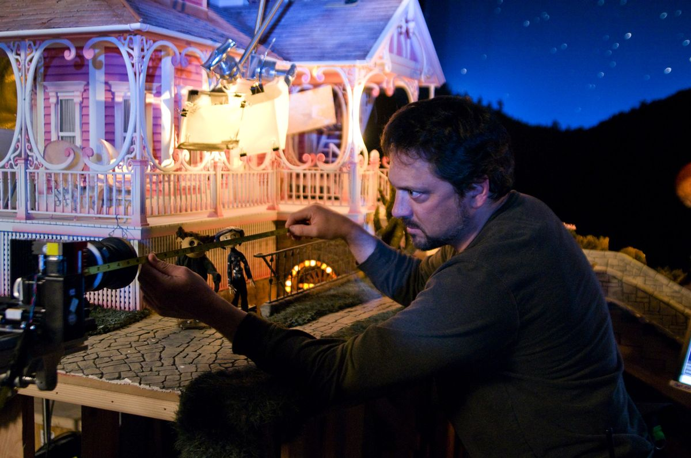
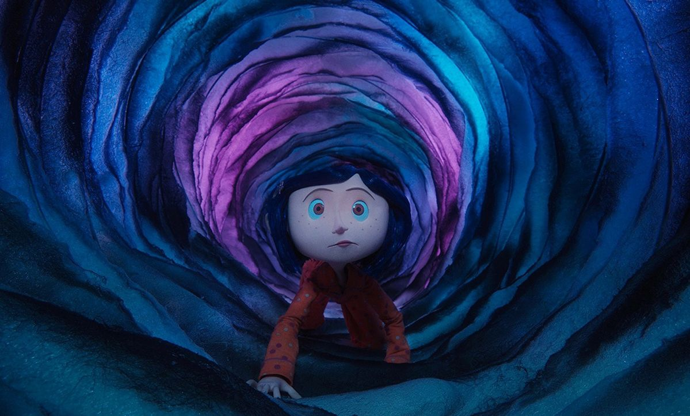
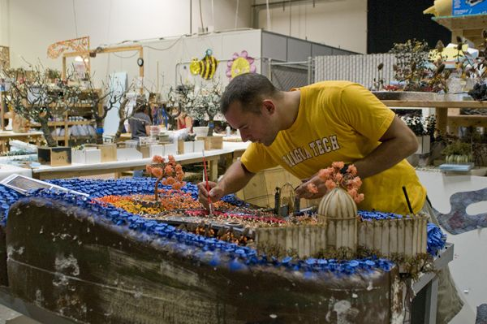
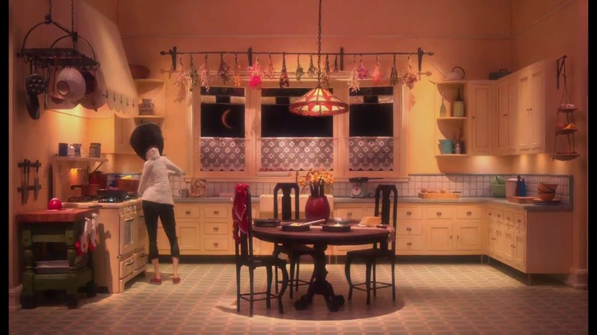
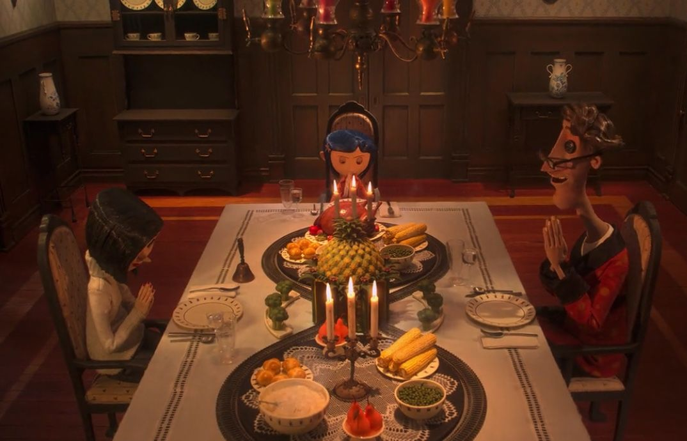
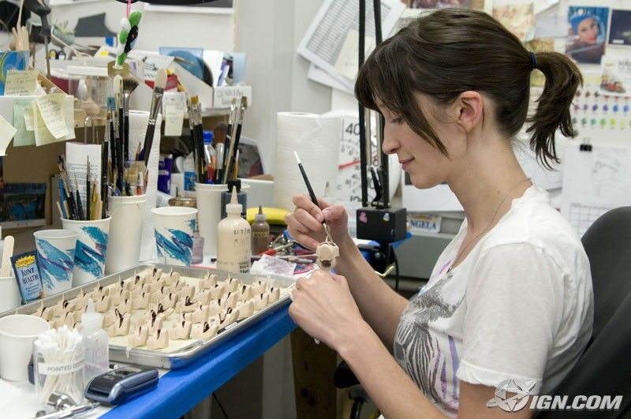
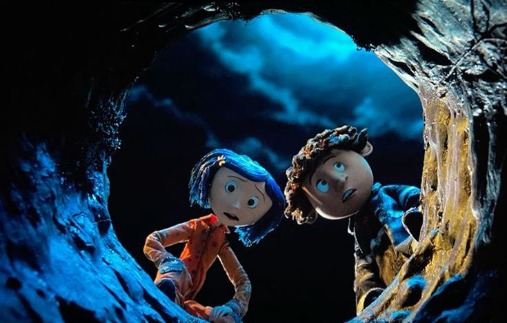

This image shows a glimpse into the behind the scenes of filming Coraline. Because the film is a stop motion, while the final result is very satisfying to watch, the process is very tedious. In this image, you can see one of the animators working on measuring the distance of the dolls to the camera.

This image showcases a snip from the iconic scene of when Coraline first enters the Other World.

In this image, one of the crew members is working on the set of Coraline, hand-painting and assembling each part of the set.

This is the kitchen of the house in the otherworld. This tiny part of the set housed many well known scenes, such as the lavish meal scenes, displayed below, and the deal making scene, in which Coraline tricked the other mother into freeing her parents, while disguising the deal as a game.

This image displays a snip out of one of the lavish meals that Coraline had towards the beginning of the movie.

As mentioned above, Coraline is a stop animation film. This means that for every word the characters say in the movie, a different mouth shape mask has to be made, in order to have a flawless mouth movement style. Additionally, masks for facial expressions have to be made as well. In the image above, each of these masks are being hand painted for the use of the animators during the filming process.

This image is from one of the last scenes in the Coraline movie, where Coraline and her friend Wybie throw away the key to the Other World down a well. Some Coraline fans theorize that the well is another enterance to the Other World.